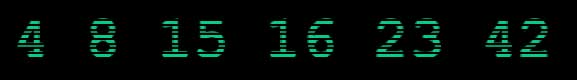

| |
6月28日 17:26 #2 -- 血脸杀手 本站最后次更新!
紧急给大家送上一个 WWI 会场发来的 笔记本, 口水...
这也许是本站这个页面最后一次更新, 暗黑3 站点的临时页面已经完成. 一旦暗黑3公布, 我们将起用新的站点, 而这里将作为暗黑系列的回顾站点.
今天的 Ice5 已经没有太多分析的意思了, 上面的笑脸代表了暴雪的娱乐精神, 也让我们用一种娱乐精神去迎接 暗黑3!
6月28日 00:36 #1
-- 血脸杀手 最后的期待, 24 小时倒记时!
由本站翻译 Ben 带来的一些消息:
德国杂志 PC ACTION 说他们知道暴雪会公布什么游戏, 但他们说即使地狱结冰或者奶牛开始送啤酒 － 他们也不会泄露.
昨晚如果你点击http:// www.battle.net/forums/board.aspx?ForumName=d3-gen, 会显示 battle.net 论坛目前有故障. 但是如果你点击其他不存在的链接, 会重新引导会 battle.net 的主要论坛页面. 只有 d3-general 是提示故障.
这个你可能会觉得熟悉. 07 年的 Blizzcon, 我们也是这样发现将会是下一个资料片的 WLK 的链接给出禁止访问的错误, 而其他不存在在 worldofwarcraft.com 的路径却提示出错 404.
还有 19 个小时就要公布了, 不知道今天图片是开幕公布还是会按平时时间提前几小时公布.
6月27日#5 -- 血脸杀手 暗黑破坏神3 确认!
暴雪官方网站更新 ice5.jpg, 截止到今天, 可以 101% 的确定是 暗黑破坏神3 了. 暗黑迷可以好好睡2天, 养足精神迎接暗黑3的到来!
首先, 大家看看我们27日更新的第三次, 我们预言的今日出现的符文位置完全一致! 其次, 请用上图中的眼睛脸部对比下面两张图, 你还会怀疑吗?
|
|
注意看眼睛 [点击放大] |
注意看眼睛 [点击放大] |
现在只有一个悬念, 暴雪隐藏起来的那个怪物究竟是什么意思?
同时有网友说, 在 www.battle.net 论坛, 曾经短暂出现过 diabloIII 论坛, 但很快消失, 有 2 张截图!
等了这么多年, 终于等到了, 哭了!
6月27日#4 -- 血脸杀手 暴雪游戏设计副主席访谈.
补充更新一条, 很多朋友发来疑问, 在暴雪游戏定位中, 蓝色一般代表星际系列, 这次可能代表 WLK. 而暗黑系列一直是红色. 那么从这点分析, 这次没有理由是暗黑啊? 可是别忘了, 也许暴雪正是在制造某种巨大的反差, 来制造最后一天的轰动效果, 大家可以用一般的作图工作, 将图片"反相"看看, 得到如下结果, 这回, 是暗黑了吗?
中午第四次更新, 首先修正了之前文章中一些错别字...然后是由本站翻译 Ben 带来的一段采访:
暴雪游戏设计的副主席 Rob Pardo 是在刚结束的巴黎游戏设计者会议中的主要演讲人物. 他在会中被问及新游戏的传言, 特别是那些关于今年 WWI 宣布 D3 的传言. 他的回答是:
你想我在我们的游戏发布会前宣布吗? 无意冒犯. 但是如果我在这里有 300 人的地方预先宣布了, 我会被 WWI 的 8000 人撕开. 这将会非常令人兴奋. 我想现在的所有人当知道宣布后都回非常兴奋.
其实我想可能大家遗漏了重要的一点, 就是关于"公布新游戏"如何定义. 我们可以使用排除法看看, 星际2 刚刚倒数完成, 排除. WLK 在暴雪首页的专题站存在很长时间了, 排除. 魔兽争霸4 呢? 虽然前几天出现过关于游戏定义的新闻, 但考虑到和星际2 的交替问题, 所以可以排除. 那么只剩下 暗黑3 了!
同时请注意, 暴雪使用的是公布新游戏, 而不是发行新游戏, 如果是发行, 那么可能是 星际2 测试等等, 毕竟 星际2 已经非常完善, 包括中国地区的本土化工作应该也在顺利进行. 本次 WWI 2008 很可能是公布 暗黑3 的制作消息, 然后开始一个类似暗黑2的每周截图活动的过程, 要知道 暗黑2 的每周截图持续了 50 周... 也就是说, 即使本次公布了暗黑3, 那么真正可以玩时, 也应该是在 星际2, WLK 稳定后的1年左右时间!
同时, www.diablo3.fr 已经指向了暴雪的欧洲官网, 而其他相关域名还没有动静, 但我想, 前段时间突然收购 www.diablo3.com, 并且在倒记时期间突然无法访问绝对不是巧合!
一定会是 <暗黑破坏神3>!
6月27日#3 -- 血脸杀手 神符之迷破解?
凌晨第三次更新, 请先看前两次更新. 半夜在仔细看了网站之前2代的游戏资料后, 终于突然想明白了这些神符和暗黑的关系, 截止目前, 已经出现了四个神符的图. 那么大家想想, 在暗黑2中, 第四场景如何打 Diablo 呢? 要开五个神符, 不是吗? 而请看下图, 与目前的 Ice4.jpg 对比, 是不是位置很温和呢? 不出意外的话, 那么今天下午的 Ice5.jpg 将会在剩下的位置出现第五个神符, 随后, 在第二天, 就会出现 BN 网站的那个暗黑图! 从而宣布暗黑3的发布!
6月27日#2 -- 血脸杀手
凌晨第二次更新, 两张也许重要, 也许没什么用的图片! 给暗黑迷们一些信心. 这几天更新频率会很快, 所以请注意更新日期和序号, 以免错过重要更新!
|
|
应该是玩家制作的29日完成图片, 很有感觉[点击放大] 大家注意看, 这个图中, 眼睛的位置与 Ice4.jpg 中那2个眼睛亮点是不是很像?
|
又一张完成的组合图[点击看大图] |
参与讨论点击这里!
6月27日 -- 血脸杀手 Battle.Net 出现重要暗示!
没看过几小时前那次更新的千万别错过, 毕竟这么有悬念的剧情错过哪集都不好. 当您看完这次更新, 我相信所有人都相信, 29号推出的一定会是 暗黑破坏神3!
27日凌晨, 在人们关注暴雪主页的同时, Battle.Net 却出现了让人意想不到的情况. 在 BN 首页显示的文件中隐藏着一副图片, 地址如下: http://www.battle.net/images/splash_diablo.jpg ! 这是 Diablo, 这是明确的告诉我们 Diablo! 图片上有三个数字, 10, 7, 05. 看起来没有什么关系, 但我想,假如 WWI 公布的话, 那么按照时间规律, 2年后的 2010年7月5日正式发行暗黑3是不是非常合理呢?
玩家开始继续探索, 去掉了具体的文件名, http://www.battle.net/images/, 大家尝试下出现了什么! 难以捉摸的由二进制代码拼成的可怕图像, 好象只有黑客上才可以看到. NO WAI!! 什么意思? 目前没人知道. 在这页的代码中, 有重要的一行 "<!-- get ready -->" , 看来一切都准备好了.
以下的内容更让人心动:
暴雪连日在其首页的 css 文件中以注释文件的形式不断添加新的图片, 图片名称以数字命名, 最早出现的两个图片分别是 04.jpg 和15.jpg, 在英文字母顺序中分别代表 D 和 O, 因此早先的推测认为剩下的图片应该会构成DIABLO的其他四个字母, I, A, B, L, 但是第三天公布的图片让很多分析家大跌眼镜, 23.jpg 代表 W, 这看起来不代表任何意义, 而在今天, 第四张图片被放了出来, 其代码是16.jpg, 代表P, 这样一来, 以字母表来解读数字意义的设想已经化为泡影.
现在已经出现的编号是 4, 15, 16, 23. 在今天, 国外的牛人给出了一个更为强大并且更为合理的解释.
数字 4 8 15 16 23 42 是 "Valenzetti Equation" (愣次等式) 涉及的内容. "Valenzetti Equation" 是 Bad Twin 的作者 Gary Troup 创作的第一本小说.
wiki 对于这个等式的描述:

The equation was secretly commissioned through the UN Security Council and is used to predict the time of human extinction.
愣次等式的意义代表人类的灭绝. 也就是 The end of human world! 那么暴雪为什么会给出这样的暗示?? 答案只有一个, Diablo is rising up again…
让我们期待剩下两天的图片编号, 如果是 8 和 42, 那么这个解释将是最终的解释, 而暗黑3必将于29号宣布.
|
|
BN 首页隐藏的 splash_diablo.jpg |
类似黑客作品的页面, NO WAI!!! |
欢迎参与论坛讨论: 点击这里
6月26日#2 -- 血脸杀手
暴雪在常规时间放出了 Ice4.jpg, 并且又更新了 master.css, 这次出现了新的单词 Cold, 加之以前的几个单词, 目前以知的为 :Tundra, Glacier, Icy and Cold. 暗黑迷们应该很容易就看出, 这是属于第五场景的几个场景地名. 而图片上圆圈中的符文则诡异的多, 第一天是魔兽世界资料片 WLK 中霜之哀伤上的图形, 第二天是暗黑中 Hel 符文的图形, 而第三天又变为了星际争霸2中的种族图标. 而今天的这张图中, 出现的图形类型太阳系, 不知道代表着什么意思. 唯一可能联系到的就是魔兽争霸3中人族建筑 Arcane Sanctum, 这种解释倒也符合逻辑顺序, 目前所有暴雪游戏的代表性符文出现, 明天会是什么呢?
而在 CSS 中隐藏的图片今天又出现了一张, 如今得到的拼图与前天我们公布的全图有了明显的区别, 看来真正的图片只有等到最后一天了. 而从目前的怪物轮廓中, 公认是属于一种海怪类的生物, 还记得以前的传闻吗? 暗黑破坏神3的副标题为: Hydra. 目前这个形象还算比较符合. 我从网上找到一段关于九头蛇的介绍, 也许对我们分析图片有很大帮助:
希腊神话中厄喀德那(见 Echinda)和堤丰(见 Typhon)所生的九头蛇,身躯硕大无比,性情十分凶残,生有九个脑袋,其中八个头可以杀死,而第九个头,即中间直立的一个却是杀不死的.许德拉在阿耳哥利斯的勒那沼泽地里长大,常常爬到岸上,糟蹋庄稼,危害牲畜.大力神赫尔克里斯的第二个任务就是杀死这条九头蛇.
激战的时候赫尔克里斯每打碎她的一个脑袋,就会在原来的位置又长出一个,于是赫尔克里斯借助侄子伊俄拉俄斯的帮助,让伊俄拉俄斯手执火把,把附近的树林点着,然后用熊熊燃烧的树枝灼烧刚长出来的蛇头,不让它长大.由于中间那个头是无法杀死的,赫尔克里斯只好把它砍下埋在路边的一块巨石下.杀死许德拉后,赫尔克里斯把自己的箭浸泡在她的血液中,此后用这支剧毒的箭杀死了革律翁(见Geryon).
有记载称许德拉长着狗的身体,她的气息中也含有剧毒,甚至只要吸一口气就足以致人于死地.
大家注意最后的介绍, 类似狗的身体, 和下面的图不是很象吗?
最后让我们放松心情, 以娱乐的态度等待新游戏的公布! ^-^
6月26日 -- 血脸杀手
根据大量可靠消息显示, 本次在巴黎举行的 WWI 2008 将会正式公布暗黑破坏神3 !
6月25日#2 -- 血脸杀手
在今早的更新后, 暴雪也放出了 Ice3.jpg, 亮点越放越大, 同时在左下方出现了第三个符文.
这个符文通过玩家放大后, 得出了令人惊讶的结论, 是SC2中的种族图标! 难道 WWI 会是正式发售星际2的日子吗?
6月25日 -- 血脸杀手
玩家的力量是无穷的, 那副神秘的图象已经被破解, 它和新游戏的关系目前还无法得知(点击图片放大)!
同时, WWI 的官方网站又出现了一副引人遐想的图片, 这中间是 Diablo, 所以应该可以肯定, 本次 WWI 应该会有比较重量的关于暗黑的消息公布:
6月24日#3 -- 血脸杀手 04-09-01-02-11-15-3?
04-09-01-02-11-15-3? 看到这一排奇怪的数字你能想到什么? 你能想到这代表着 D-i-a-b-l-o-3 吗? 好吧, 让我们看看为什么这么解释:
自从暴雪在所有网站首页加入了一副新图( Ice1.jpg )后, 今天这副图变为了 Ice2.jpg ( 见下图), 想比第一副图, 今天这副图的亮光更强烈了. 这副图的出现, 使得关于新游戏的猜想变了两种可能: 一是魔兽世界资料片巫妖王之怒, 因为在第一天的图中, 某些元素通过玩家放大后可以清晰的看到"霜之哀伤"剑身的符文图象( 见图 3 ). 同时蓝色主体也符合 WLK 的游戏风格; 二是暗黑3, 当然, 这是我希望看到的结果, 在今天的第二张图中, 左上角和右上角的两个圈中, 我将元素放大并对比网站资料中的神符图片, 得到了如下结果, 两个圈中分别是 4# 和 15# ( 见图 4). 如果说这一巧合还不能说明问题的话, 那么请记住这两个数字, 继续往下看.
这一图片的地址被玩家发现定位在 us.media.blizzard.com/232309/ , 请注意后面目录的数字, 玩家的力量真是不容忽视, 有人很快发现了道理, 原来暴雪是用数字与26个字母对应起来, 例如 A=01, B=02, 那么 232309 就很明显的代表了 WWI, 也就是即将召开的这次大会.
随后, 玩家又发现了文件中关键的 CSS 文件 master.css, 在这其中, 有一行被隐藏显示的定义:
/*.tundra {background:url(_images/04.jpg) no-repeat 0 0} */
呵呵, 现在越来越有意思了, 这张图是什么呢? 很快公布出来了( 见图5 ). 从图中看, 这可能是怪物造型的左上角. 还记得开始时我们说过的两个神符的数字吗? 4# 和 15#. 现在 04 有了, 玩家用技术手段, 很快在同一目录下, 发现了 15.jpg! ( 见图6)
有聪明的玩家做了张图, 按照距离 WWI 开始的时间, 每天一张图, 将图放进表格会得到什么呢? ( 见图7 ) 这张图中, 第一个公布的 04. jpg 换成对应的字母是 D, 将在放在第一个, 而接着发现的 15.jpg 换成字母是 O, 将在放在最后一个, 那是 WWI 开幕的日子. 那么在这四天中, 会不会接着出现 09.jpg, 01.jpg 等等呢?
好, 到目前位置, D-i-a-b-l-o 都有了, 那么 3 呢? 假如, 当然, 这只是假如, 前面这些猜想都得到印证的话, 那么在开幕的第2天, 应该会有 3.jpg, 而这天也恰好是暗黑2发行的日子, 在时隔多年后的同一天发布暗黑3, 难道不是最好的时机吗?
到目前为止, 一切看来都更倾向于公布暗黑3, 那么继续研究, 假如亮光在最后全部打开后, 真的是我们拼出的这个图, 那么图中的怪物是什么呢? 继续开始人肉搜索. 有人提供了线索, 在 Fanart 中见到过类型的图, 于是我们马上打开暴雪的 Fanart 页面, 在第13页, 我们突然发现多出了一个空白的图框. ( 见图8 )
点击这个图片, 出现这样的提示语句: " This space intentionally left blank by Falthorn". 同时还有一张图片, 显示了一个带问号的恐龙类形象.( 见图9 )
现在问题的关键集中到这张图上了, 究竟以前这里是什么图呢? 很幸运, 做为一个中文的 Fan Site, 我们保留了所有暴雪网站的资料, 在我们的图片部分, 可以看到所有的 Fanart, 包括顺序也没有改变过, 所以我马上在我们站点按顺序进行搜索, 在 http://www.blizzard.cn/index/pic_list.php?typeid=43&page=137 找到了前后相同的几副画. 通过我们的这个页面, 可以肯定一点, 那个位置之前没有任何东西, 是后来加上的, 那么究竟是什么时候加上, 又为什么要加上. 恐怕要等到 WWI 开幕才会有答案了!
目前我们还在研究各种相关资料, 一有发现, 会随时给大家带来最新消息!
6月24日#2 -- 血脸杀手
昨日暴雪更换了首页图片, 预示着新作的公布; 随后著名的 Diablo3.com 开始无法访问, 以前此域名是转向 Diablofans.com, 由此能想到什么呢? 还有4天, 一且都将揭晓!
6月24日 -- 血脸杀手 暴雪新首页图片暗示新作公布?
今天暴雪官方网站首页增加了一副新的图片( http://www.blizzard.com), 仿佛预示着某些东西要破冰而出. 还记得公布星际2时, 暴雪也采取了这样的方式来进行预告, 也许这次预示着在即将来到的 2008WWI 上, 会公布某些新作, D3 OR WLK? 让我们拭目以待吧!

6月19日 -- 血脸杀手 Blizzard 即将提供游戏下载!
暴雪论坛官方发言人 Dath 回应, 近期将可以用数码下载来购买 D2 和 LOD. 这与本站6月8日的更新中进行的猜测相吻合.
最近放出并正在使用的 D2 1.12a 补丁可能还隐含着一个细小的补丁. 这个补丁还没有得到确认. 将最近发出的补丁命名为以 a 结尾的如 1.12a 是不寻常的, 应该会有计划放出 1.12b.
6月18日 -- 血脸杀手 1.12a 版正式公布!
暴雪在今天早上将战网更新为了 1.12a 版, 目前只要登陆BN就可以进行自动更新, 或者在本站的下载区进行下载, 请注意对应标准版和资料片不同的下载.
此补丁相当于一个免CD的补丁. 请使用完整安装并确保以下两个文件存在于游戏安装目录下:
d2xvideo.MPQ
d2xmusic.MPQ
下载地址: 暗黑破坏神2 ; 暗黑破坏神2毁灭之王 .
6月12日 -- 血脸杀手
魔法前缀 和 魔法后缀 页面更新了对近战武器类型的定义范围.
6月11日 -- 血脸杀手
资料区根据官方网站变化更新以下页面:
NPC 介绍栏目中的第三场景, 第四场景加入了免费治疗的对应NPC说明;
角色信息页面对命中率部分进行了公式修正, 并加入了一行说明;
刺客技能支配影子修正了一些说明;
超大型护身符属性中修正了最高生命属性的错误;
倒钩槌属性中修正了强壮要求的错误;
祭坛神龛中的装甲神殿修正了属性表达错误;
法师技能暖气修正了最后公式的错误;
怪物基础资料中的多人游戏怪物生命确认公式及说明变更;
死灵法师技能鲜血石魔技能的偷取生命说明错误修正.
往日更新: 12.26 - 1.29 | 1.29 - 3.28 | 3.29 - 6.10 |
|